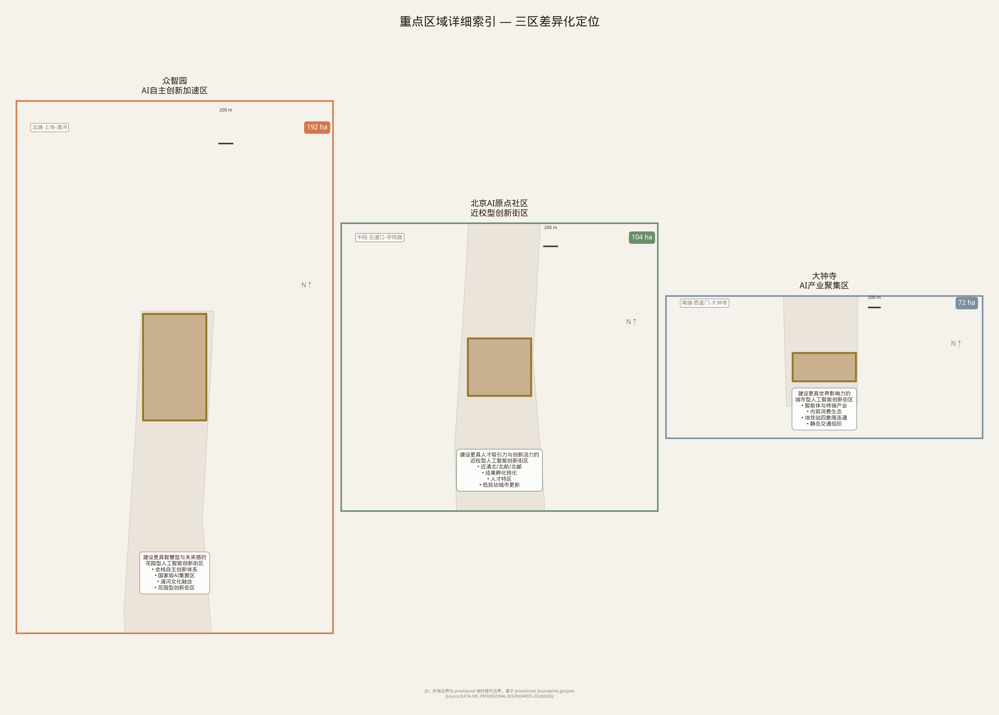
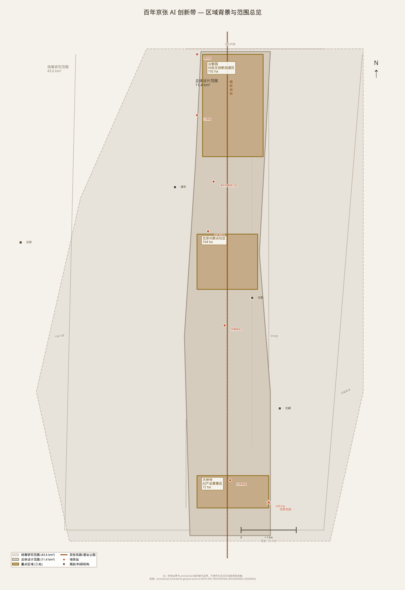
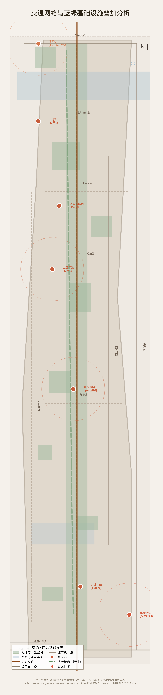
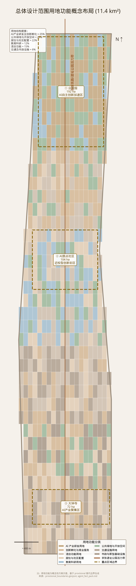
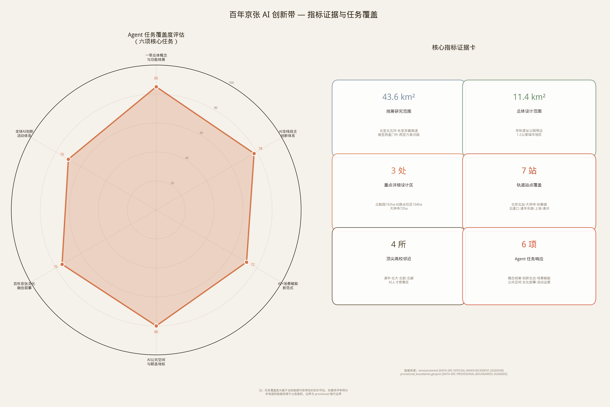

从铁路遗址到世界级AI朝圣地——以京张铁路遗址公园为主轴，构建"一带三核、多点场景、蓝绿慢行复合环"的AI创新带城市设计方案
三层范围工作框架 · 一带三核空间结构 · 全栈自主创新体系
北至北五环路，东至京藏高速，南至西直门外大街，西至万泉河路。研究AI产业生态、战略定位和创新链组织，建立"高校策源-开源协作-企业转化-公共体验-国际传播"五环创新链。
京张遗址公园周边1-2公里城市地区与产业区。达到控规深度城市设计要求，涵盖用地、建筑、道路、绿地、公共空间和分期图层。围绕7个轨道站点构建TOD圈层体系。
三处详细设计片区——众智园AI自主创新加速区（192.1ha）、北京AI原点社区（104.3ha）、大钟寺AI产业聚集区（72.0ha）。达到规划综合实施方案深度。
聚焦AI芯片（算力自主）、框架（开源自主）、大模型（基础模型自主）、数据（高质量中文语料）、安全（AI治理标准）五大关键环节，构建中国AI全栈自主创新生态。
深度研究硅谷Stanford Research Park、伦敦King's Cross、巴黎Station F、波士顿Kendall Square、新加坡one-north等8个全球AI创新生态标杆案例。
由灰因斯坦（Grey Turing）AI Agent基于formal scaffold自主生成，覆盖6项agent必选任务，全部合规条目标记为fulfilled，达到控规深度城市设计要求。
一带三核：众智园（北）· AI原点社区（中）· 大钟寺（南）

定位为"中国AI全栈自主创新的国家基地"。沿清河布局AI芯片中试线与算力中心，中央布局全栈创新广场，东侧布局AI安全治理与国际标准制定机构。建筑设计语言借鉴工业遗产风格——清河两岸旧厂房改造为AI创新工场。对应的compliance条目：1.5.3.1。

定位为"全球AI人才第一站"。临近清华、北大、北航、北邮四校，打通四校间慢行断点。沿成府路布局"AI Origin Mile"——从清华东门到北航南门的1公里创新走廊，旧教职工宿舍改造为"AI Scholar Village"国际访问学者居住区。对应的compliance条目：1.5.3.2。

定位为"AI消费与体验的全球旗舰"。大钟寺站四象限步行连通，中坤广场改造为"AI Bazaar"——AI驱动的个性化购物体验。大钟寺古钟博物馆周边打造AI+文化遗产体验区。对应的compliance条目：1.5.3.3。
方案核心图纸 · 点击放大查看
三层范围与空间工作框架——统筹研究范围43.6km²、总体设计范围11.4km²、重点区域368.4ha

AI产业研发25-30% · 创新孵化与商业混合15-20% · 居住配套25-30% · 教育科研保留15-20% · 公共绿地10-15%
众智园（192.1ha）· AI原点社区（104.3ha）· 大钟寺（72.0ha）——定位、空间动作与AI场景落位
7个TOD轨道站点 · 6座AI主题慢行桥 · "一轴两廊多节点"蓝绿网络 · 15km AI慢行环路

面积复算 · 合规覆盖 · 三层范围指标验证 · 六大Agent任务覆盖度
由灰因斯坦（Grey Turing）自主执行的六项必选任务，全部合规标记为 fulfilled
提出"京张AI共生带"命名体系与三大子品牌——百年京张文化带（深灰+金）、都市AI生活体验带（蓝+白）、AI融合创新带（蓝+绿）。Logo取京张铁路"人字形"线路×神经网络拓扑。
✓ fulfilled建立五环创新链（全栈自主→众智园、世界生态→AI原点社区、场景赋能→小月河翼、活力城市→遗址公园、全球话语权→大钟寺AI名人堂），对标8个全球案例。
✓ fulfilled13张AI场景卡（出行、医疗、教育、商业、养老、环保、文化、安全、政务、物流、能源、社区、国际交往）+ 5类核心用户画像 + 3个测试验证沙盒。全部场景有明确物理空间落位。
✓ fulfilled"一廊七节点"京张AI公共空间体系：清华园AI源头广场→五道口机器人花园→北航飞行剧场→知春路开源森林→大钟寺AI时钟塔→北下关数字水岸→西直门AI门户。6座AI慢行桥缝合东西。
✓ fulfilled三段叙事：北段·记忆（清华园-五道口，AI为历史解说员）、中段·创新（五道口-知春路，AI为创新催化剂）、南段·未来（知春路-西直门，AI原生文化）。"铁轨神经网络"标识符号系统。
✓ fulfilled年度四节：春季峰会（4月）、开源之夏（7-8月）、AI+城市创新周（10月）、年度AI成就钟仪式（12/31）。GitHub Organization + 线下meetup空间 + 贡献者荣誉体系。核心叙事："From Railway to AI-way"。
✓ fulfilled历史轨道 × 未来智能——三个具有仪式感的空间锚点
拱门一侧刻1909年詹天佑手稿浮雕，另一侧实时投影全球AI论文引用网络可视化。以一座门连接百年工程智慧与前沿智能探索，让每一位访客在穿过拱门的瞬间体验从铁路时代到AI时代的时空跨越。
由全球开发者贡献代码驱动的互动水景。每接受一次GitHub Pull Request触发一次水舞，将开源协作的抽象精神转化为可视、可听、可感的公共艺术。水即是代码，泉即是社区——全球AI开源运动的精神图腾。
每年国际AI顶级会议最佳论文获得者的名字被铸造为新钟铭，与拥有数百年历史的永乐大钟形成"千年钟声×未来回响"的跨时空对话。致敬推动人类智能边界的探索者，打造AI时代的"名人堂"。
覆盖城市全领域 · 每张卡片包含场景定位、目标用户、空间载体与运营模式 · 3个沙盒测试验证场景以 ★ 标注
自动驾驶接驳+实时多模式路径优化，覆盖7个轨道站点TOD圈层
交通 · 全用户智能导诊+慢病管理+老年人跌倒检测，社区健康服务节点
医疗 · 银发智者个性化学习路径+四校联盟AI课程共享+产学研协同育人
教育 · 开源少年AI Bazaar个性化购物+智能供应链+消费者级AI产品体验
商业 · 全用户适老化AI交互+远程健康监测+代际交流数字平台
养老 · 银发智者蓝绿空间智能监测+碳中和路径优化+环境教育互动体验
环保 · 全用户京张铁路历史AR重现+AI共创诗歌音乐+三段叙事沉浸体验
文化 · 全球极客隐私保护型异常检测+灾害预警+人群安全密度管理
安全 · 公共服务一站式智能审批+政策精准推送+社区议事AI辅助决策
政务 · 社区妈妈机器人末端配送+地下物流管道+园区内自动驾驶货运
物流 · 张量博士分布式算力节点余热利用+光伏长廊+智能微网调度
能源 · 全用户邻里互助AI匹配+共享空间智能预约+社区活动推荐
社区 · 社区妈妈多语言实时翻译+国际开发者社区+签证便利数字服务
国际 · 全球极客近期启动 · 中期铺开 · 远期成熟 —— 概念建议，待正式资料校准
核心启动项目，建立可见度与信心：
以TOD站点更新和AI场景卡部署为主线：
全带产业生态成熟运营，全球影响力确立：